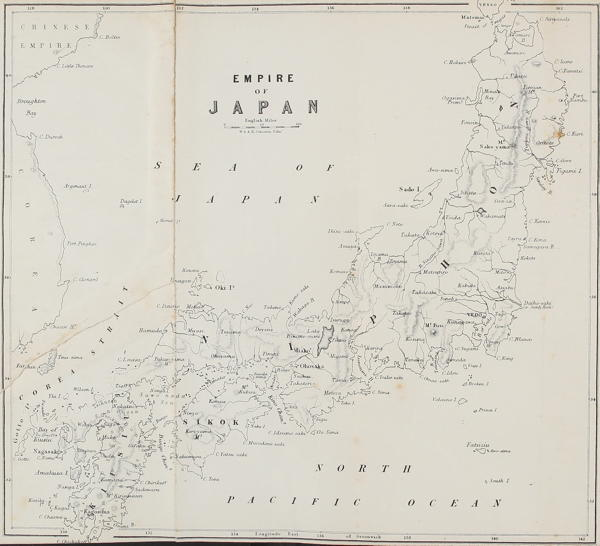

“Empire of Japan”
Narrative of the Earl of Elgin’s Mission to China and Japan (1859)
Japan embraces a series of islands, chiefly volcanic in origin, extending as a sort of adjunct to the Asiatic continent, for a distance of more than fifteen hundred miles from northeast to southwest, and having a mean breadth from east to west of perhaps one hundred miles. There are nine principal islands, and counting all, great and small, barren and fertile, within the space described, the number may be almost indefinitely extended. Some Japanese writers set the number down at two to three thousands; but this includes barren rocks of small extent, which have no other use than to serve as temporary perches for wandering sea-fowl, and which in foggy weather are a constant menace to navigation.
With a base or skeleton of granitic rocks, especially apparent toward the southern portion, these Japanese islands seem to constitute a mountain chain running nearly parallel with several chains in Asia, that extend from the North Sea well toward the Indian Ocean. The base is often, perhaps generally, overlaid with volcanic tufa or conglomerate, and this in turn, except on mountain heights, with deposits of a recent age, largely black, vegetable mould, the accumulation of a luxuriant vegetation. Not unfrequently a fresh cutting a few feet in depth, will show two or three deposits of mould, interspaced with layers of an igneous origin, indicating that frequent volcanic outbursts have attended the recent geological history of these islands, as also that the climate must have been most favorable for an abundant plant life. The coal in Japan is chiefly, if not wholly, of the Tertiary period, and lacks somewhat the compactness and substance of coal belonging to the Carboniferous age.
From Japan to Granada (1889)
There are more than twenty active volcanoes in Japan to-day, while hundreds of old cones and vents scar the islands from one end of the kingdom to the other.
But, like the dwellers on the slopes of Ætna and Vesuvius, an eruption is no sooner ended than the natives set to work to repair their broken fortunes and build up their industries anew, as if the like could never occur again. Such is the nature of man. He sees and accepts the present opportunity, and gives little heed to the chance occurrence that seems so far away. The Japanese form no exception to the rule. The village swept by a typhoon or buried in volcanic ash or cinder is built up again, and the field left one year in desolation will smile again with fruitful harvests, as soon as the debris can be cleared away.
From Japan to Granada (1889)
The coast-line of the Japan islands is broken and irregular, with many bays and inlets. There is little of the sublime to mark the scenery, but the islands are fair and sunny, and diversified by mountain and valley and wide-extended plains. Over the plains broad, shallow rivers flow peacefully in their channels, and down from the mountain-sides, into the pleasant valleys, come wild little streams, making up in swiftness and impetuosity what they lack in size.
As you travel among the mountains the murmur and gurgle of waterfalls hidden from sight fall upon the ear as they tumble over the rocks and down the precipices. Mountains, valleys and plains are clothed in the richest green, and exhibit in pleasing combination the productions of both temperate and semi-tropical climes.
Japan bears traces of the curse in the earthquake and the tempest, the brier and the thorn, but there is little here that is hurtful; few poisonous plants or reptiles are found. The Japanese are justly proud of their land, whose beauty they celebrate in many a song and poem.
All around the islands sweeps the Pacific Ocean, dashing in white foam upon the rocks and murmuring against the low shores. Sometimes it grows rough and angry, and appears as if threatening to submerge the whole land. But it is only a threat, for even the tiniest isles are safe. After all, the sea loves the land, and delights in whispering to it pleasant stories and in casting its lovely treasures upon its shores.
The Sunrise Kingdom (1879)
◀ Arrivals Climate ▶